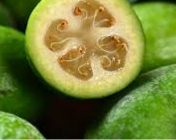
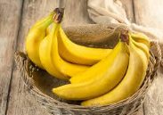
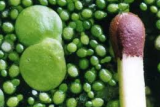
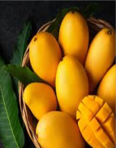
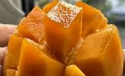
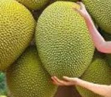
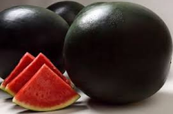
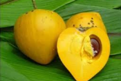

Самый непопулярный — Фейхоа: 90% мирового урожая съедают в Бразилии и Новой Зеландии.

Самый популярный — Банан: ежегодно в мире съедают более 100 миллиардов бананов.

Самый маленький — Вольфия: плод весит 70 микрограммов и имеет диаметр 0,2 мм.

Самый сладкий — Манго сорта Атаульфо: содержание сахара достигает 22%.

Самый вкусный — Манго сорта Махачанок: по результатам слепых дегустаций 2023 года получил 9,8 балла из 10, обойдя 47 сортов.

Самый крупный — Джекфрут: рекордсмен 2016 года весил 51,7 кг и достигал 90 см в длину.

Самый дорогой — Арбуз Денсуке: пара черных арбузов с Хоккайдо ушла на аукционе 2019 года за 750 000 иен

Самый опьяняющий — марула: упавшие плоды быстро забраживают, из-за чего слоны иногда наедаются их и пьянеют.
